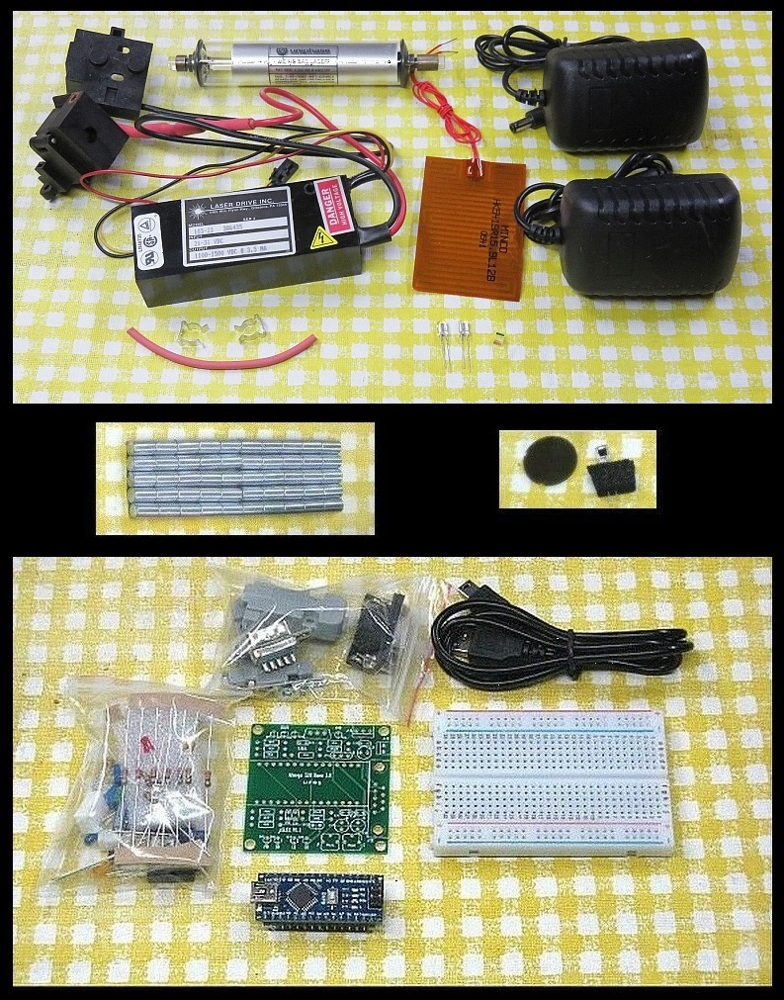
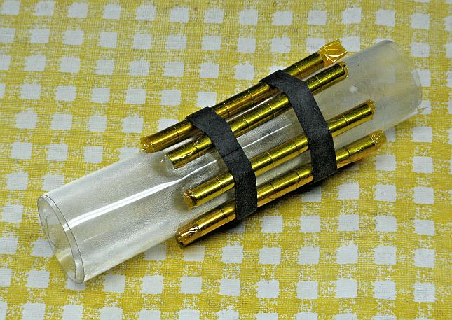
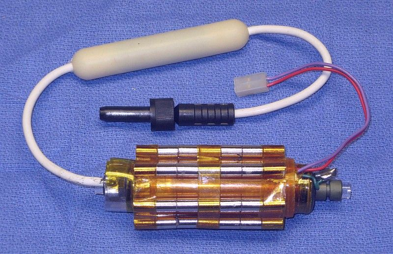
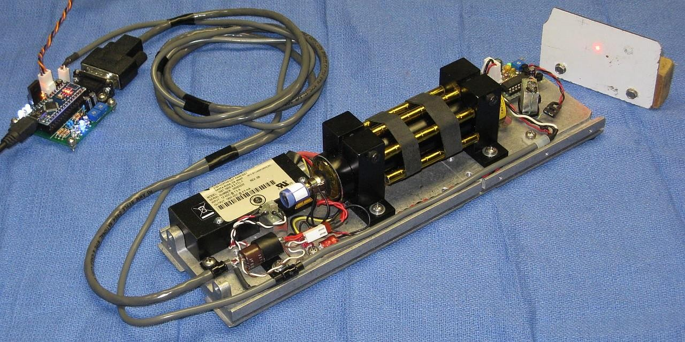

The two-frequency Zeeman-split HeNe laser is the key component in many
high precision interferometer-based metrology systems
used in applications like stage positioning for
semiconductor wafer fabrication. In a nutshell,
when an axial magnetic field is applied to a short random polarized HeNe laser
tube, a longitudinal mode will be split into right circular and left
circular polarized components with a difference in optical frequency
of up to a few MHz. When constructing an interferometer, having the
difference signal, F2-F1, provides advnatages over a single frequency
laser in terms of immunity to noise and elimination of periodic adjustments
as the laser ages.
This document contains notes on the construction of a two-frequency Zeeman
HeNe laser using the set of parts in Stabilized Zeeman kits. Note that
there are a superset of the one or two mode stabilized HeNe laser kit so a
non-Zeeman stabilized HeNe laser can also be constructed from these
parts if the HeNe laser tube satisfies certain requirements (not all do).

(The style of some parts may vary slightly from what's shown in the photo and
the parts in the bottom pane are only present for the Arduino version.)
The following laser components are included (top pane of photo):
Melles Griot, Siemens, Spectra-Physics,
or Uniphase ~4.75 or ~6 inch 0.4 to 1.2 mW HeNe laser tube
that has been tested to assure that it is well behaved for use in a Zeeman
laser. Note: Some of these tubes have anode-end output. Do not touch
anode-end when powered or shortly after to avoid shocking experience!
Laser Drive 103-23 or Melles Griot 05-LPM-847 HeNe laser power supply
brick with ballast resistor and tube mounts. Some have Alden connectors.
(Prior to 2020, kits were shipped with
copper-covered bricks which ran on 5 VDC. There is also a link to the wiring
info for these below should you have just uncovered one of those antiques.)
2x3 inch thin film Kapton heater with adhesive backing. The cold
resistance is between 12 and 16 ohms. It should be run on a maximum
of 8 to 12 V.
12 VDC wall adapter for the heater. This may be a 12 VDC regulated
power supply or an LED lamp supply. In the latter case, it may have a built
in electronic ballast typically of up to a few ohms so the output is not
constant with increasing current. For the heater, this doesn't matter
and actually adds some protection against shorts. The 12 VDC adapter
will probably have a barrel connector for 12 VDC, along with a mating
jack so it can be unplugged. Most are of the regulated type.
Polarizing Beam Splitter (PBS) Cube and a pair of silicon photodiodes
(PDs) for the feedback.
Variable attenuator plate that may be used as a beam sampler. This
may be installed in one of the tube mounts, which is where it originated.
Set of 50 6x10 mm N52 rare earth magnets.
Piece of polarizer film and photodiode for monitoring the Zeeman
beat on an oscilloscope or frequency counter.
Quarter WavePlates (QWPS) to convert circular to linear polarization for
the output and feedback. There may be one of two types:
1/2 inch diameter optical quality mica:
THESE ARE EXTREMELY THIN AND FRAGILE and
should be sttached to a support like a washer for protection. Since the
beam diameter is less than 1 mm coming out of the tube, these can be
cut into smaller pieces and mounted on small washers. ;-) It will be
necessary to determine the optical axes as described below.
There will be at least the number specified in the eBay listing of these.
~1/4 inch greenish glass rhombus shaped plate: These are
mounted in a small black plastic ring thing with a handle. ;-)
The WP's optical axes appear to be at 45 degrees with respect to the handle.
They are simpler to use but cannot be subdivided, at least not easily.
The absorption appears to be quite low despite the greenish appearance.
But how well they work may be hit or miss depending on the specific
laser tube and magnet arrangement
ranging from an orthogonality of greater than 10:1 to 3:1
or less. More below. So these will not be the only QWPs in the kit but
one may be included for experimentatal purposes. ;-)
This is due to the fact that the output of a Zeeman laser tube is usually
NOT pure circular polarization but elliptical, so it includes a
superposition of circular and linear polarizaton. In order for the result
after the QWP to be pure linear polarization with orthogonal axes, the linear
components must line up with the QWP's optical axes to pass through
unchanged or else they would end up elliptical
but will be at a 45 degree angle relative to the converted circular polarized
input. Since these are mutually coherent, they will add at the output
resulting in pure linearly polarized orthogonal components at some
arbitrary angle determined by their relative intensity. Or something. ;-)
However, the behavior of these WPs is not symmetric at 633 nm like the mica
ones above, or normal QWPs designed for 633 nm. Converting pure combined left
and right dual circular polarization from the Zeeman tube
is clean with clearly defined axes and good orthogonality as noted above
once the orientation of the QWP with respect to the tube has
been optimized (which is normal).
But in tests with a linearly polarized laser (essentially 1 component
of the two frequency laser's output), the conversion in the reverse
direction (regardless of which side the beam enters)
does not behave like a QWP. If a polarizer
is set at a 90 angle to the laser's polarization axis so the beam
is totally blocked, the output following one of these QWPs inserted in
the beam path will vary in intensity depending on the WP's orientation
but never approach 0 indicating that there is always
significant elliptical polarization in the output. With a normal QWP, the beam
would be totally blocked when oriented so that one of its optical axes
is aligned with the laser's polarization axis.
These QWPs were designed to work at 3 wavelengths in a Blu-ray optical
pickup - 405, 650, and 780 nm. My hypothesis is that the peculiar
non-reciprocal behavior is a byproduct of this but a proof is above
my pay grade (or at least my level of determination). :( ;-)
Here are some more specific tests at 633 nm using a single polarized component:
It's possible that at the design wavelengths including 650 nm these are better
behaved but that isn't really useful here.
There may be several other samll parts that will aid in construction
(not shown).
The following control components are included in the Arduino version ONLY
(bottom pane of photo):
Atmega Nano 3.0 Arduino-compatibel microprocessor board and USB cable.
Solderless breadboard to contruct prototype along with V1.1 PCB for
the final version (either may be used).
Electronic parts including resistors, capacitors, connectors, heater
driver transistor, LEDs, etc.
See important CAUTION
about powering the Atmega board in the µSLC1 manual. Specifically,
DO NOT power the board using +12 VDC to VIN at the same time the USB
is plugged in. Only use 12 VDC for the heater. While this is supposed
to work, doing so killed (probably) the USB chip on one of my Atmega
boards when the 12 V supply was switched on. The cause is not
known. When the controller is NOT attached to USB, then it's OK to use
VIN to power the board.
What you will need to provide:
Mounting scheme for the tube inside the Zeeman magnet, for a beam sampler
to divert a portion of the beam for feedback, and for the PBS and PDs:
The tube must be free to expand slightly so an entirely rigid mount is not
acceptable. In addition, it should not be totally enclosed as heat
transfer to the air is needed to balance the heat provided by the
tube discharge current and thin film heater.
To fit the tube with magnets in the mounting scheme, it may
be necessary to trim the mounting brackets, or do away with them
entirely and use tube clips (included). This is recommended as
the brackets limit the available space for the magnets.
The beam sampler and PBS can be glued to posts with the PDs glued to its
back and side, or to some simple plastic or metal enclosure of your choice.
The PDs can also be installed on a piece of Perf. board with the PBS glued
between them. A spacer (made from a piece of Perf. board or something
similar) may be required to lift the PBS to the optimum height. Take care
with the PD lead wires as they are easily broken. Very thin wire (e.g.,
AWG #30) is recommended. Do NOT apply any stress
while soldering as the heat can melt the plastic causing them to shift
and break internally. After soldering, confirm that the PDs still behave
like diodes with a DMM.
Dual Polarization Detector Assembly Built on Perf. Board
A laser power meter or other means of measuring output power
will be desirable to monitor the behavior of the modes as the tube warms
before µSLC1 is running. The laser power meter can
simply be a silicon photodiode and multimeter or microammeter since
actual power measurements aren't needed. But a laser power meter with
a graphical display, or a PC with Data Acquisition System (DAS) is best to be
able to observe the mode sweep in real time. A basic 4 channel USB DAS can be
purchased for as little as $60 delivered from
DATAQ. Check out their "Low Cost Data
Acquisition Start(er) Kits". These are similar to what I have used for
most of my data capture.
But with the Arduino version of the kit,
once the µSLC1 Arduino controller with the Windows GUI is
operational, it can serve this purpose.
Oscilloscope and/or frequency counter to measure the Zeeman beat.
Almost any type of instrument will be satisfactory as the maximum
frequency is under 2 MHz. µSLC1 can also display the beat frequency
if the signal is TTL compatible.
Optional: Components to build an actual interferometer using your
two-freuqency laser.
Organization of two-frequency Zeeman-split HeNe Laser:
The diagram below shows a system similar to what may be constructed using
parts in this kit and readily available materials and electronics.
Many variations are possible. The Arduino implements the
electronics inside the box. The REF Signal monitor is shown using
the waste beam but could also be in the main beam (the polarizer would then
need to be at 45 degrees). However, that would require an additional beam
sampler plate (not included) which would decrease the output power slightly.
Power and wiring:
Follow the link to the type of power supply and adapter that was included
in the kit:
As noted there are two beams from the tube. The main beam is the stronger
one (typically by a factor of 25-100 or more) than the "waste" beam.
Which end of the tube is which is set at the time of manufacture. For
the tube in the kit, it will need to be determined as both types have
been shipped at times. Most of the 6 inch tubes have anode-end output while
all the 4.5 inch tubes have cathode-end output.
The output beam emerges from the end with the
AR coating, which appears blue-ish in reflection. However, it may be
the anode or cathode-end. Also as noted, the tube MUST be oriented so
the glass-end is wired to the positive (red wire with ballast) of the
HeNe laser power supply or else bad things will likely happen.
Since the waveplates are required to convert circular to linear polarization,
there are two waveplates included in the kit.
However, the waste beam can be used for the internal REF
detector if desired requiring only a polarizer and
eliminating one beam sampler.
Installing the heater:
The long dimension of the 2x3" heater should be wrapped around the tube
so it covers nearly the entire circumfrance or may slightly overlap. Thus
The Kapton heater has an adhesive backing. Peel off the backing paper and
stick it on centered between the two end-caps. For convenience (this is
sort of arbitrary) orient it with the wire connection point lined up with the
tip-off (the small metal tube where the air was removed and the gas was
inserted). Press it firmly in place over its entire surface. Route the
red wires toward the cathode-end of the tube. Where the wires attach is
lumpy. Allow this to poke out a bit rather than squashing it against the
tube which may damage the connections. Wrap some high temperature tape
around the heater to keep it secure, but only at most one layer so as to
allow heat to pass to the environment.
Determining the polarization axes of the tube (optional):
This step is only really required if it is intended to use the tube
in a (non-Zeeman) stabilized laser. When installed in the magnet,
the tube orientation is not critical. However, this is a good exercise
in becoming aquainted with mode sweep and how the longitudinal modes
behave.
NOT ALL TUBES will work for a non-Zeeman one or two mode stabilized laser,
at least not trivially. The tube must have well behaved longitudinal
modes. Specifically, it should NOT have polarization switching, also known
as mode flipping. It's often possible to use flippers for non-Zeeman
stabilization but it adds complication. Since flippers actually
seem to work better for Zeeman, the tube in this kit may be a flipper
unless it was purchased to be usable for both single frequency and Zeeman
applications. But even it if is a flipper,
experiments and stabilization without the magnets could
still be interesting. So, it would be worth determining the polarization
axes of the tube and labeling them. A flipper will still have polarization
axes but the change in mode amplitude will not be smooth but will abruptly
change intensity, usually at some specific point during the mode sweep cycle.
As noted, the laser tube actually produces 2 beams: A strong one out the
anode-end (front) and a much weaker one out the cathode-end (rear). For
use in a conventional stabilized laser, the beam sampler can be constructed
behind the rear of the tube and use the weak beam. As a side benefit, this
is the low voltage end of the tube so shocking experiences will be minimized.
For use with the Zeeman laser, a QWP must be inserted between the tube
and PBS cube oriented with its optical axis at 45 degrees to X or Y.
Alternatively, a beam sampler can be added in the output beam after
the polarization has been converted to linear.
In principle, using the main beam will have slightly better stability,
especially for some tubes but in practice, do whatever is more convenient.
I prefer to make use of the waste beam for feedback.
Place the PBS on a support so the main beam passes
through its center and a deflected beam shoots off to one side. Eventually
the PBS will need to be mounted securely, but
for now, a block of wood or stack of CDs and CD boxes will suffice. :)
Use a white card as a screen to observe the beam coming straight
through the PBS and the beam being reflected to the side. They will
vary in intensity along with the polarized modes coming out the front.
Adjust the tube orientation so they alternately go completely dark
periodically and label the tube with with that result.
The power varies because the longitudinal modes of the laser cavity are
moving through the neon gain curve as the tube expands due to heating.
The roughly bell-shaped gain curve results in gain variation depending on
its height. If 5-10 VDC is applied to the heater (between the two red
wires), the rate of the mode sweep will greatly increase since the tube
is expanding faster.
As the tube/heater combination approaches thermal equilibrium where the
power input from the electrical discharge in the bore of the laser tube
and heater power are balanced by heat loss to the environment, the
mode sweep will slow down and eventually stop. If power is removed from
the heater at that time, the discharge heat alone will no longer be
able to sustain the same temperature, the tube will start to cool,
and the mode sweep will reverse.
Plot of Spectra-Physics 007 HeNe Laser Tube During Warmup (Detail)
This shows the mode sweep from a cold start of a tube similar to the type
included in the kit.
To provide the feedback signals, one of the photodiodes
will be placed behind the PBS cube and the other
on the side. Devise mounts for the PDs so each of
the beams strikes its respective PD and
any reflections do not go back into the tube.
They can even be glued to the PBS with the entire assembly mounted
at a very slight angle to avoid back-reflections.
For thermal stabilization to be effective, what is desired is where a
modest amount of heater power is needed to be at thermal equilibrium.
Perhaps 20-30 percent of the power in the bore discharge. For the 6
inch tube running at at 3 mA, 900 V, the bore discharge power is just
under 3 W. So, 1 W of heater power should be sufficient to allow the
laser to stabilize with reasonable immunity to ambient temperature changes.
Using a 3 or 4 VDC power supply, it should be possible to simulate the action
of an electronic feedback circuit to confirm that stabilization is possible.
A purist might object (due to noise considerations), but this means that a
single 5 or 6 VDC power supply could be used for both the HeNe laser power and
the stabilizer. However, this kit includes a 12 VDC power supply intended
to be used for the heater.
Note that the tip-off may prevent orienting the tube optimally within the
mounts. (This is most likely with the short tubes which tend to have a
longer tip-off than the long tubes.
If that is the case and the mount cannot be modified to be usable
by removing some plastic, then either the PBS will need to be mounted
at the appropriate angle, or a different mounting scheme will be required
for that end of the tube.
Installing the Magnets:
CAUTION: These are powerful rare earth magnets. Keep them well away from
any magnetic media or other magnetic-sensitive objects or devices including
small children. Since they are small, flesh squashing isn't a major concern
but they still can do damage.
The magnets can be arranged in a variety of ways. The one that has been
tested and found to be satisfactory
is 7 sets of 7 magnets spaced equally surrounding the tube. They
must all be facing the same way, N-S field direction-wise. Whether N or
S faces the output isn't critical but will flip the error signal so once
a direction has been selected, stick with it. This arrangement of magnets
should result in a peak split (or beat) frequency of 0.9-1.1 MHz. However,
it's possible that an arrangement of, say, 10 sets of 5 magnets might be even
better. Or if a higher split frequency is desired, obtain some more
magnets. That's for you to determine if interested. :) But there is
a limit to the strength of the magnetic field above which so-called
"rogue modes" will develop and the split frequency waveform will become
asymettric or worse, and the actual frequency itself will probably not
increase. Rogue modes are not likely
to be present using the magnets included in this kit, but they could
if trying larger rare earth magnets.
[The best way to check for rogue modes is using
a Scanning Fabry-Perot Interferometer (SFPI, also known as a Laser Spectrum
Analyzer), which can be built using parts that are available in another
of my listings. The basic SFPI will not have enough resolution to actually
see the individual modes whose difference in optical frequency
produces the split frequency, but it will easily
show if any other modes are present that shouldn't be there.]
The objective should be to provide a fairly uniform field over the entire
extent of the discharge inside the tube's bore. The magnets should
actually extend slightly beyond these points since the field
declines to 0 at the very edge of the magnets (and then reverses).
For the tubes in these
kits that means from very near the anode end-cap to somewhere around the
center of the cathode can. The arrangement with 7 sets of 7 magnets
fulfills this requirement, more or less. ;-)
In order for the magnets to cooperate and not jump out of position, each
"stick" should be wrapped with 1" Kapton (preferably) or packing tape.
Then they can
be secured surrounding the tube using slices of bicycle inner tube or
tape. Provide adequate insulation so there can be no chance of the
high voltage at the anode-end of the tube arcing to the magnets even
if they shift position. A
sheet of the type of thick clear plastic often used to package grocery
items works well here as shown (slightly squashed) below.

Seven Sets of Seven Rare Earth Magnets Secured to Plastic Sleave
The tube can be slipped inside and be close to the magnets without fear of
short circuits or arcing.
It may be possible to increase the effective magnetic field - and thus
the split frequency (up to a point) - by adding
pole pieces at both ends of the magnet array - soft iron rings or the like.
However, care must be taken not to boost the field too much.
There is there a limit to how high the split frequency can go before "rogue"
longitudinal modes are produced resulting in the inability to
be locked and poor performance in an interferometer. With the six inch
tube and 7x7 magnet array there should be none. A Scanning Fabry-Perot
Interferometer (SFPI) can be used to confirm rogue mode-free behavior.
Much more on rogue modes via the links, above. Being able to go above
around 1.5 MHz with these tubes is unlikely.

Seven Sets of Seven Rare Earth Magnets Secured to Tube
This shows a similar tube inside the magnets but with electrical connections
for an HP laser.
Alternatively, the tube can
be installed with insulation inside a non-ferrous cylinder as in the
complete Zeeman laser shown below.
Rare earth magnets are more sensitive to heat than Alnico magnets, so
if installing a heater surrounding the tube, keep the array of magnets
slightly away from it with air or plastic in between.
When powered with the magnets in place, the appearance of the glow of the
tube and laser beam won't be noticeably different by eye, though power
variation during mode sweep and actual output power may change enough
to be easily detected. The fun will begin when using simple instruments.
Here they are actually secured to an aluminum cylinder inside which the
tube and heater (well insulated) is installed.
The Quarter WavePlates (QWPs):
The raw output of the HeNe laser tube in the Zeeman magnet consists of lasing
modes that are left and right circularly polarized. For these to be useful
for stabilization feedback and in an interferometer, it is necessary to
convert them to orthogonal linearly polarized modes. This is normally
done with a Quarter WavePlate (QWP) oriented with its optical axis at 45
degrees to the base (X and Y axes).
A pair of optical quality mica
QWPs is included in the kit. THESE ARE VERY THIN AND FRAGILE so extreme
care must be exercised in handling. In the envelopes in which they are
packaged they are virtually invisible. It is recommended that the first
thing to be done is to mount them on a supports like metal washers with
a few dabs of adhesive around the periphery. The optical axis may not
be readily apparent if it is marked at all, so the orientation will generally
need to be determined by testing while monitoring the mode behavior of the
transmitted beam(s). This will be done using µSLC1 and/or a laser
power meter or equivalent.
If using the main beam for both feedback and output as in the diagram, a
single QWP will suffice to convert to linearly polarization. But if using
the waste beam for feedback as in the photo of the completed laser, QWPs
will need to be installed at both ends of the tube.
Since the beam is less than 1 mm in diameter from the laser tube, only a small
portion of the QWPs are actually required. So, they can be cut into several
pieces if desired to conserve QWP availability. ;-)
Optimization of the QWP orientation will be done below.
Constructing the beat detector:
Determine the anode and cathode of one of the photodiodes with a
multimeter. (I can never remember which way it goes!)
Wire the PD to a 9 V battery or the 5 VDC power pack and load
resistor as shown:
PD
+5 to 9 VDC o-----------|<|---------+--------o Output
C A |
/
R1 \ Scope or
/ Counter
\
|
Return o-----------------------+--------o Ground
The suggested value for R1 is 2.7K which is a compromise between largest
amplitude and frequency response. Feel free to experiment with higher or
lower values.
Test the tube for Zeeman behavior:
Temporarily install the tube inside the magnet array with adequate
insulation to prevent shorts or arcing at the anode end. It should
light up within a few seconds, and to the unaided eye, will appear to
lase normally. Aim the main beam through the polarizer to the PD.
Use the beat detector to view the Zeeman beat or measure its frequency from the
tube in magnet. A polarizer must be placed in front of the PD but without
the waveplates, its orientation doesn't matter.
Tube Installed in Zeeman Magnet for Testing (Left) and Video of Typical Beat Signal (Right)
This shows the bare tube snug with its heater
inside a plastic sleeve with 7 sets of 7
rare earth magnets secured to it with slices of bicycle inner tube,
along with a polarizer and a built up version of the beat detector
in the schematic, above, with a swing arm and 9 V battery inside.
The position of the magnets along the tube was selected to maximize
their overlap with the active bore discharge, resulting in the highest
peak split frequency.
As the tube warms up and the cavity length increases, a beat will appear
periodically during mode sweep at a frequency peaking around 1 MHz
for the 6 inch tube and the set of 49 rare earth magnets. The beat will
probably be present between 50 and 75
percent of the cycle, and will change frequency somewhat during this time.
With a greater magnetic field, the percentage of the cycle over which there
is a beat decreases. For example, it may be less than 10 percent for
an HP-5517D laser which locks with a ~3.75 MHz split frequency.
If 5-10 VDC is applied to the heater, the rate
of the mode sweep will greatly increase since the tube is expanding faster.
The short video on the right shows the output of the back biased photodiode behind
a polarizer using the rig in the photo on the left with around
10 V applied to the heater shortly after the tube was powered on.
Due to asymmetries in the tube, optimizing the orientation of the
QWP that converts circular to linear polarization and tube will need to be
done once a beat signal can be displayed. Even if the polarization axes of the
tube have been determined (above) for use in a non-Zeeman stabilized laser,
they won't necessarily be related:
Put a linear polarizer oriented with its axis horizontal or vertical
between the QWP and biased photodiode connected to an oscilloscope.
Set up the tube with its output beam hitting the photodiode.
Add a QWP between the tube and LP.
Rotate the QWP until the detected AC beat signal is a minimum
Rotate the tube until the detected AC beat signal is as small as possible
(which may be smaller than in the previous step).
Confirm that the signal is maximized with the linear polarizer oriented
at plus or minus 45 degrees.
Since the tube isn't locked and stabilized, the beat will come and go due to
mode sweep as the tube warms up and expands, so you will have to catch it
each time. ;-) Mark the orientation of the tube so it can be installed
later the same way.
Note that while µSLC1 has a split (or "REF") frequency input which
will display in the Main Window of the GUI, it requires a TTL-compatible
signal. This can be generated by an HP/Agilent optical receiver or an
equivalent home-built circuit. This kit currently doesn't include parts
for that, sorry. A simple circuit that should
be suitable can be found at Teletrac 150 Reference
Receiver Schematic. Either REF or REF- can be sent to the µSLC1
REF input. DO NOT connect an optical receiver like an HP-10780 or SG-OR3
with an AC-coupled signal directly as bad things may happen.
Mounting the tube in the Zeeman magnet:
Now mount the tube/heater assembly more permanently inside the set of magnets
making sure to provide adequate electrical insulation. There should only
be minimal thermal insulation - one layer of Kapton tape. The tube needs
to be able to dissipate heat to the environment for the stabilization to
be effective. In addition, it needs to be able to expand and contract
so it should NOT be attached rigidly. But since the total change in
length is a fraction of 1 mm, this should not be a problem.
Eventually, the QWPs will need to be added but that can wait until there
is a convenient way of monitoring the outputs.
Testing the photodiodes response to laser light:
The following assumes that the QWP has been installed to conver the
circular polarization to linear polarization and the resultin polarization
axes are known.
To test the response of the silicon PhotoDiodes (PDs) included in these kits,
a simple test circuit using a few resistors, a 5 VDC power supply
(or USB charger cube), and DMM can be constructed before connecting the
stabilization controller. To determine the polarity of the PDs, use the DMM
on the "Diode Test" range across the pins: The voltage drop will be between
0.5 and 0.6 V if the red probe is connected to the anode. The polarity is
usually opposite for a VOM but they are only found in museums these days. ;-)
Wire up a test circuit as follows:
V1
o
R Protect PD1 | R Load 1
+5 VDC o----/\/\----+-----|<|---+---/\/\-----+
| |
| V2 |
| o |
| PD2 | R Load 2 |
+-----|<|---o---/\/\-----+
|
|
GND/RET o-------------------------------------+
+5 VDC through a 200 ohm to 1K ohm resistor to the cathodes of both
photodiodes. This resistor simply provides protection to limit current
through the PDs should they be backwards or something unfortunate occurs.
But if too large, they will limit the response to light so don't go
above 1K ohms.
One end each of a pair of load resistors to the anodes of both PDs.
Their value will depend on the laser power. The response of a silicon PD
is typically between 0.3 and 0.4 mA/mW. So select load resistors (or
trim-pots) of appropriate value so that there will be a detectable response:
Main beam of 0.5-1.5 mW: 10K ohms.
Sampled main beam of 0.1-0.3 mW: 50K ohms.
Waste beam of 0.01 to 0.03 mW: 500K ohms.
CAUTION: If the PDs are at the anode-endo of the tube, take care to keep the
setup at a safe distance as they won't like being zapped by the high voltage.
Nor will you. :( :)
The other end of the load resistors go to GND/RET of the 5 VDC supply.
Monitor the voltage across each load resistor with the DMM on the
DCV range (0 to 5 V typical). Adjust the value of the load resistors
if needed.
With the beam blocked to each PD, the voltage across its load resistor
should be close to 0 V.
With the beam incident on the PD, there should be a detectable response
whose value will depend on the actual laser power and load resistor. With
a 5 VDC supply, the available range is from 0 to slightly below 5 V.
If the PBS cube (or a linear polarizer) in inserted in the beam AND
the tube is rotated so the polarization axes line up with the polarizer, the
voltage will vary during mode sweep.
Note that with the magnet installed, the appearance of the mode sweep is
distinctively different than it is without them.
Closing the loop:
To stabilize the laser so that the position of the modes is under automatic
control with a Zeeman beat requires some electronics to first run the tube
in "Preheat Mode" so that the temperature of the tube/heater combination
levels off somewhat above ambient, and then to "Lock Mode" to allow the
output of one or both photodiodes to take control.
If you're willing to switch from Preheat to Lock mode manually, the
required circuit can be as simple as 2 basic electronic components - a
resistor and a power MOSFET. This won't have superior performance but
is quick and easy to get working and therefore will provide nearly immediate
gratification. :)
However, the Arduino kit includes components to construct a fully automatic
controller using an Atmega Nano 3.0 Arduino-compatible microprocessor
platform.

Two-Frequency HeNe Zeeman Laser with Arduino-Based Controller
However, unlike the non-Zeeman case where one can lock on either side of the
gain curve depending on the polarity of the error signal, with the Zeeman
laser, there is only one place to obtain a beat. In other words, it's
possible to lock so that the two components - F1 and F2 - are equal in two
locations. One is where the Zeeman-split
longitudinal mode is between the split gain curves
and there will be a beat. The other is where there are actually two
separate (non-Zeeman) longitudinal modes with equal amplitude but far far away
at the longitudinal mode spacing of the laser tube. In that case, there will
be no beat without a fancy high speed detector since the frequency would
be over 1 GHz.
Adjusting the QWP:
Perpare to install the QWP between the tube and PBS beam sampler.
While monitoring the horizontal and vertical mode signals from the PBS,
rotate the QWP until the two signals are most different. They should look
something like the screen shot below.
µSLC1 Display Showing Zeeman Mode Behavior Near End of Locking
The ragged green and orange plots of of the modes is characteristic of
Axial Zeeman behavior. The QWP orientation should be set to
maximize their amplitude.
If using the waste beam for feedback, test and adjust both QWPs and label
their orientation. Then transfer one to the main beam using the same
orientation. Whether the waste beam has enough output power depends on
the specifif laser tube. Only testing will determine for sure.
Enhancements/experiments:
Look at the output using a Scanning Fabry-Perot Interferometer (SFPI)
both during mode sweep and when locked. Are there any modes besides the
Zeeman-split mode present? When? For info on SFPIs, see:
Scanning Fabry-Perot Interferometers.
Inexpensive kits are available to construct SFPIs (see my other listings),
though building that can resolve the twin Zeeman-split lasing lines would
be a challenge. Doable but difficult.
Experiment with the strength of the magnetic field and its placement.
The HP magnet is in three sections so 1 or 2 of them could be used. The
field can be reduced modestly using soft iron shims and increased using
external magnets. (However, there is some risk of demagnetizing the
Alnico magnet segments separating them and using shims or external magnets.)
Install your Zeeman laser assembly in an HP/Agilent laser body. Although
the HP/Agilent control PCB locking scheme is not ideal for a non-HP/Agilent
tube, it will work. Inquire for details. ;-)